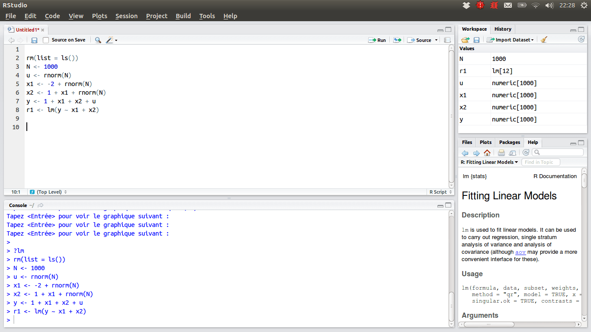
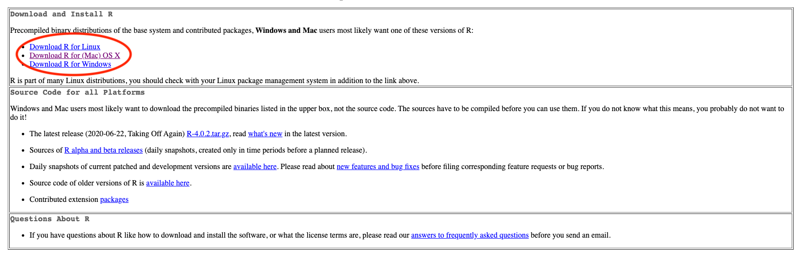

3 Tool foR Data
This book serves as a main reference book for my MATH 4720 Statistical Methods and MATH 4740 Biostatistical Methods at Marquette University. Some topics can also be discussed in an introductory data science course. You’ll learn basic probability and statistical concepts as well as data analysis techniques such as linear regression using R computing software.
This chapter provides a broad overview of the R language that will get you programming right away. In it, you will build a pair of virtual dice that you can use to generate random numbers. Don’t worry if you’ve never programmed before; the chapter will teach you everything you need to know.
To simulate a pair of dice, you will have to distill each die into its essential features. You cannot place a physical object, like a die, into a computer (well, not without unscrewing some screws), but you can save information about the object in your computer’s memory.
Which information should you save? In general, a die has six important pieces of information: when you roll a die, it can only result in one of six numbers: 1, 2, 3, 4, 5, and 6. You can capture the essential characteristics of a die by saving the numbers 1, 2, 3, 4, 5, and 6 as a group of values in your computer’s memory.
Let’s work on saving these numbers first, and then consider a method for “rolling” our die.
3.1 R and RStudio


- R: free open-source programming language üìà
- R is mainly for doing data science with strength in statistical modeling, computing and data visualization
- RStudio 1: interface for R, Python, etc called an IDE (integrated development environment), e.g. “I write R code in the RStudio IDE”.
- RStudio is not a requirement for programming with R, but it’s commonly used by R developers, statisticians and data scientists.
[1] RStudio company is becoming Posit starting October 2022.
3.2 The R User Interface
- RStudio IDE includes
- a viewable environment, a file browser, data viewer, and a plotting pane. üëç
- also features integrated help, syntax highlighting, context-aware tab completion and more! üòÑ
R
R Studio


3.3 ☁️ RStudio Cloud - Statistics w/o hardware hassles
- üòé We can implement R programs without installing R and RStudio in your laptop!
- üòé RStudio Cloud lets you do, share and learn data science online for free!
3.3.1 üòû R/RStudio: Lots of friction
- Download and install R
- Download and install RStudio
- Install wanted R packages:
- rmarkdown
- tidyverse
- …
- Load these packages
- Download and install tools like Git
3.3.2 ü§ì RStudio Cloud: Much less friction

- Go to https://rstudio.cloud/
- Log in
>hello R!
- üòÉ We do statistical analysis using RStudio IDE, directly from a web browser!

3.4 Install RStudio Cloud


3.5 New Projects
In RStudio Cloud, click New Project > New RStudio Project, then you are all set!

3.6 First R Code in RStudio Cloud!
- Give your project a nice name (click Untitled Project), math-4720 for example.
- First R code:
"Hello WoRld!"or2 + 4after>in the Console pane. - Change the editor theme: Tools > Global Options > Appearance

3.7 Working in RStudio/RStudio Cloud
3.7.1 RStudio Panes

3.7.2 R Script
- A R script is a .R file that contains R code.
- To create a R script, go to File > New > R Script, or click the green-plus icon on the topleft corner, and select R Script.

3.7.3 Run Code
- Run : run the current line or selection of code.
- Icon right to the Run : re-run the previous selected code.
3.7.4 Environment Tab
- The (global) environment is our workspace (NOT the RStudio Cloud workspace).
- Anything created or imported into the current R session is stored in our environment and shown in the Environment tab.
- After we run the R script, objects stored in the environment are
- Data set
mtcars - Object
xstoring integer values 1 to 10. - Object
ystoring three numeric values 3, 5, 9.
- Data set

3.7.5 Help
- Don’t know how a function works or what a data set is about ❓
- üëâ Simply type
?followed by the data name or function name like
?mean
?mtcars- A document will show up in the Help tab, teaching you how to use the function or explaining the data set.
3.7.6 Resources
In RStudio Cloud sidebar,
- R and RStudio Cheat Sheats
- Learn more RStudio and statistical data science: Primers

3.8 Install R
3.8.1 Step 1
- Go to https://cloud.r-project.org
- Click Download R for [your operating system]

3.8.2 Step 2
- If you are a Mac user, you should see the page as below. You are recommended to download and install the latest version of R (now R-4.2.1 (Funny-Looking Kid)), if your OS version allows to do so. Otherwise, choose a previous version, R-3.6.3.
- If you are a Windows user, after clicking Download R for Windows, please choose base version, then click Download R-4.2.1 for Windows.

3.8.3 Step 3
- Once you install R successfully, when you open R, you should be able to see the following R terminal or console:
Windows
Mac
3.9 Welcome to the R World!
- Now you are ready to use R to do statistical computation.
- You can use R like a calculator. After typing your formula, simply hit Enter, you get the answer! For example,
1 + 2[1] 330 * 42 / 3[1] 420log(5) - exp(3) * sqrt(7)[1] -51.53193.10 Install RStudio
3.10.1 Step 1
- In the RStudio website, please choose Products > RStudio as shown below.

3.10.2 Step 2
- Choose RStudio Desktop and click DOWNLOAD RSTUDIO DESKTOP for the free version.

3.10.3 Step 3
- Click DOWNLOAD RSTUDIO FOR [YOUR SYSTEM]. Then follow standard installation steps, you should get the software soon.
- Be careful that R should be installed successfully in your computer before you download and install RStudio.
- [Note]: The latest version of RStudio is 2022.07.1+554.

3.11 RStudio Screen
- When you open RStudio, you should see something similar to the figure below.
- If you do, congratulations! You are able to do every statistical computation in R using RStudio locally in your computer.
3.12 R is a Calculator - Arithmetic Operators

3.12.1 Examples
2 + 3 * 5 + 4[1] 212 + 3 * (5 + 4)[1] 29- We have to do the operation in the parenthesis first

3.13 R Does Comparisons - Logical Operators

3.13.1 Examples
5 <= 5[1] TRUE5 <= 4[1] FALSE# Is 5 is NOT equal to 5? FALSE
5 != 5[1] FALSE## Is TRUE not equal to FALSE?
TRUE != FALSE[1] TRUE## Is not TRUE equal to FALSE?
!TRUE == FALSE[1] TRUE## TRUE if either one is TRUE or both are TRUE
TRUE | FALSE[1] TRUE3.14 Built-in Functions
- R has lots of built-in functions, especially for mathematics, probability and statistics.

3.14.1 Examples
sqrt(144)[1] 12exp(1) ## Euler's number[1] 2.718282sin(pi/2)[1] 1abs(-7)[1] 7factorial(5)[1] 120## without specifying base value
## it is a natural log with base e
log(100)[1] 4.60517## log function and we specify base = 2
log(100, base = 10)[1] 23.15 Commenting
- Use
#to add a comment so that the text after#is not read as an R command. - Writing (good) comments is highly recommended: help readers and more importantly yourself understand what the code is doing.
- Comments should explain the why, not the what.


https://www.reddit.com/r/ProgrammerHumor/comments/8w54mx/code_comments_be_like/
3.16 Objects and Funtions in R
Everything that exists is an object.
Everything that happens is a function call.
– John Chambers, the creator of the S programming language.
- We have made lots of things happened!
- Even arithmetic and logical operators are functions!
`+`(x = 2, y = 3)[1] 5`&`(TRUE, FALSE)[1] FALSE3.17 Creating Variables
- A variable stores a value that can be changed according to our need.
- Use
<-operator to assign a value to the variable. (Highly recommendedüëç)
x <- 5 ## we create an object, value 5, and call it x, which is a variable.
x ## type the variable name to see the value stored in the object x[1] 5(x <- x + 6) # We can reassign any value to the variable we created[1] 11x == 5 # We can perform any operations on variables[1] FALSElog(x) # Variables can also be used in any built-in functions[1] 2.397895
3.18 Bad Naming
- ❌ Unless you have a very good reason, don’t create a variable whose name is the same as any R built-in constant or function!
- üòü It causes lots of confusion when your code is long and when others read your code.
## THIS IS BAD CODING! DON'T DO THIS!
pi ## pi is a built-in constant[1] 3.141593(pi <- 20)[1] 20abs ## abs is a built-in functionfunction (x) .Primitive("abs")(abs <- abs(pi))[1] 203.19 Object Types
3.19.1 Types of Variables
- Use
typeof()to check which type a variable belongs to. - Common types include
character,double,integerandlogical. - Check if it???s of a specific type:
is.character(),is.double(),is.integer(),is.logical().
typeof(5)[1] "double"typeof(5L)[1] "integer"typeof("I_love_stat!")[1] "character"typeof(1 > 3)[1] "logical"is.double(5L)[1] FALSE3.19.2 Variable Types in R and in Statistics
- Type
characterandlogicalcorrespond to categorical variables. - Type
logicalis a special type of categorical variables that has only two categories (binary). - Type
doubleandintegercorrespond to numerical variables. (an exception later) - Type
doubleis for continuous variables - Type
integeris for discrete variables.
3.20 (Atomic) Vector
- To create a vector, use
c(), short for concatenate or combine. - All elements of a vector must be of the same type.
(dbl_vec <- c(1, 2.5, 4.5)) [1] 1.0 2.5 4.5(int_vec <- c(1L, 6L, 10L))[1] 1 6 10## TRUE and FALSE can be written as T and F
(log_vec <- c(TRUE, FALSE, F)) [1] TRUE FALSE FALSE(chr_vec <- c("pretty", "girl"))[1] "pretty" "girl" ## check how many elements in a vector
length(dbl_vec) [1] 3## check a compact description of
## any R data structure
str(dbl_vec) num [1:3] 1 2.5 4.53.20.1 Operations on Vectors
- We can do any operations on vectors as we do on a scalar variable (vector of length 1).
# Create two vectors
v1 <- c(3, 8)
v2 <- c(4, 100)
## All operations happen element-wisely
# Vector addition
v1 + v2[1] 7 108# Vector subtraction
v1 - v2[1] -1 -92# Vector multiplication
v1 * v2[1] 12 800# Vector division
v1 / v2[1] 0.75 0.08sqrt(v2)[1] 2 103.20.2 Recycling of Vectors
- If we apply arithmetic operations to two vectors of unequal length, the elements of the shorter vector will be recycled to complete the operations.
v1 <- c(3, 8, 4, 5)
# The following 2 operations are the same
v1 * 2[1] 6 16 8 10v1 * c(2, 2, 2, 2)[1] 6 16 8 10v3 <- c(4, 11)
v1 + v3 ## v3 becomes c(4, 11, 4, 11) when doing the operation[1] 7 19 8 163.20.3 Subsetting Vectors
- To extract element(s) in a vector, use a pair of brackets
[]with element indexing. - The indexing starts with 1.
v1[1] 3 8 4 5v2[1] 4 100## The first element
v1[1] [1] 3## The second element
v2[2] [1] 100v1[c(1, 3)][1] 3 4## extract all except a few elements
## put a negative sign before the vector of
## indices
v1[-c(2, 3)] [1] 3 53.21 Factor
- A vector of type
factorcan be ordered in a meaningful way. - Create a factor by
factor(). It is a type of integer, not character. üò≤ üôÑ
fac <- factor(c("med", "high", "low"))
typeof(fac)[1] "integer"levels(fac) ## Each level represents an integer, ordered from the vector alphabetically.[1] "high" "low" "med" str(fac) ## The integers show the level each element in vector fac belongs to. Factor w/ 3 levels "high","low","med": 3 1 2order_fac <- factor(c("med", "high", "low"), levels = c("low", "med", "high"))
str(order_fac) Factor w/ 3 levels "low","med","high": 2 3 13.22 List (Generic Vectors)
- Lists are different from vectors: Elements can be of any type, including lists.
- Construct a list by using
list()instead ofc().
## a list of 3 elements of different types
x_lst <- list(idx = 1:3,
"a",
c(TRUE, FALSE))
x_lst$idx
[1] 1 2 3
[[2]]
[1] "a"
[[3]]
[1] TRUE FALSEstr(x_lst)List of 3
$ idx: int [1:3] 1 2 3
$ : chr "a"
$ : logi [1:2] TRUE FALSEnames(x_lst)[1] "idx" "" "" length(x_lst)[1] 33.22.1 Subsetting a List
x_lst <- list(idx = 1:3,
"a",
c(TRUE, FALSE))Return an element of a list
Return a sub-list of a list
## subset by name (a vector)
x_lst$idx [1] 1 2 3## subset by indexing (a vector)
x_lst[[1]] [1] 1 2 3typeof(x_lst$idx)[1] "integer"## subset by name (still a list)
x_lst["idx"] $idx
[1] 1 2 3## subset by indexing (still a list)
x_lst[1] $idx
[1] 1 2 3typeof(x_lst["idx"])[1] "list"
If list
xis a train carrying objects, thenx[[5]]is the object in car 5;x[4:6]is a train of cars 4-6.— @RLangTip, https://twitter.com/RLangTip/status/268375867468681216


3.23 Matrix
- A matrix is a two-dimensional analog of a vector.
- Use command
matrix()to create a matrix.
## Create a 3 by 2 matrix called mat
(mat <- matrix(data = 1:6, nrow = 3, ncol = 2)) [,1] [,2]
[1,] 1 4
[2,] 2 5
[3,] 3 6dim(mat); nrow(mat); ncol(mat)[1] 3 2[1] 3[1] 23.23.1 Subsetting a Matrix
- To extract a sub-matrix, use the same indexing approach as vectors on rows and columns.
- Use comma
,to separate row and column index. mat[2, 2]extracts the element of the second row and second column.
mat [,1] [,2]
[1,] 1 4
[2,] 2 5
[3,] 3 6## all rows and 2nd column
## leave row index blank
## specify 2 in coln index
mat[, 2][1] 4 5 6## 2nd row and all columns
mat[2, ] [1] 2 5## The 1st and 3rd rows
mat[c(1, 3), ] [,1] [,2]
[1,] 1 4
[2,] 3 63.23.2 Binding Matrices
- We can generalize
c()used in vectors tocbind()(binding matrices by adding columns) andrbind()(binding matrices by adding rows) for matrices. - When matrices are combined by columns (rows), they should have the same number of rows (columns).
mat [,1] [,2]
[1,] 1 4
[2,] 2 5
[3,] 3 6mat_c <- matrix(data = c(7, 0, 0, 8, 2, 6),
nrow = 3, ncol = 2)
## should have the same number of rows
cbind(mat, mat_c) [,1] [,2] [,3] [,4]
[1,] 1 4 7 8
[2,] 2 5 0 2
[3,] 3 6 0 6mat_r <- matrix(data = 1:4,
nrow = 2,
ncol = 2)
## should have the same number of columns
rbind(mat, mat_r) [,1] [,2]
[1,] 1 4
[2,] 2 5
[3,] 3 6
[4,] 1 3
[5,] 2 43.24 Data frame: The Most Common Way of Storing Data
- A data frame is of type list of equal-length vectors, having a 2-dimensional structure.
- More general than matrix: Different columns can have different types.
- To create a data frame, use
data.frame()that takes named vectors as input.
## data frame w/ an dbl column named
## and char column named grade.
(df <- data.frame(age = c(19,21,40),
gender = c("m","f","m"))) age gender
1 19 m
2 21 f
3 40 m## a data frame has a list structure
str(df) 'data.frame': 3 obs. of 2 variables:
$ age : num 19 21 40
$ gender: chr "m" "f" "m"## must set column names
## or they are ugly and non-recognizable
data.frame(c(19, 21, 40), c("m","f", "m")) c.19..21..40. c..m....f....m..
1 19 m
2 21 f
3 40 m3.24.1 Properties of Data Frames
- Data frame has properties of matrix and list.
names(df) ## df as a list[1] "age" "gender"colnames(df) ## df as a matrix[1] "age" "gender"length(df) ## df as a list[1] 2ncol(df) ## df as a matrix[1] 2dim(df) ## df as a matrix[1] 3 2## rbind() and cbind() can be used on df
df_r <- data.frame(age = 10,
gender = "f")
rbind(df, df_r) age gender
1 19 m
2 21 f
3 40 m
4 10 fdf_c <-
data.frame(col = c("red","blue","gray"))
(df_new <- cbind(df, df_c)) age gender col
1 19 m red
2 21 f blue
3 40 m gray3.24.2 Subsetting a Data Frame
- When we subset data frames, we can use either list or matrix subsetting methods.
df_new age gender col
1 19 m red
2 21 f blue
3 40 m gray## Subset rows
df_new[c(1, 3), ] age gender col
1 19 m red
3 40 m gray## select the row where age == 21
df_new[df_new$age == 21, ] age gender col
2 21 f blue## Subset columns
## like a list
df_new$age[1] 19 21 40df_new[c("age", "gender")] age gender
1 19 m
2 21 f
3 40 m## like a matrix
df_new[, c("age", "gender")] age gender
1 19 m
2 21 f
3 40 m